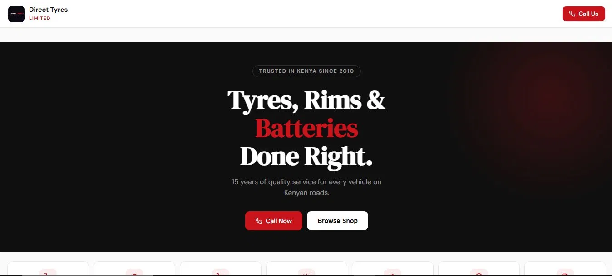

A bold, high-contrast e-commerce site for Kenya's trusted tyre, rim and battery supplier — built to match the confidence of a brand that's been on the road since 2010.

Direct Tyres Limited had been serving Kenyan drivers since 2010 — a 15-year track record of quality service across tyres, rims, and batteries. Customers who knew them, trusted them. But for anyone searching online, that reputation was invisible.
The automotive retail space in Kenya is crowded and competitive. Without a strong digital presence, potential customers searching for tyre suppliers, rim fittings, or battery replacements were finding competitors instead. Every day without a website was a missed opportunity.
The brief: build a site that communicates authority, makes the product catalogue easy to browse, and converts visitors into calls and walk-ins.
The visual direction matched the brand's personality: dark background, high contrast, red as the primary accent — powerful, confident, and built for people who take their vehicles seriously. The design had to communicate performance at a glance.
The hero section leads with the core offer immediately — "Tyres, Rims & Batteries Done Right" — with a clear call to action above the fold. No guessing what the business does. No scrolling required to find a phone number.
The product catalogue was structured for quick browsing. Automotive customers often know exactly what they need — they just want to find it fast, confirm availability, and make contact. The entire UX was designed around that journey.
Mobile performance was non-negotiable. A large portion of Kenyan automotive searches happen on mobile — often from the roadside or a garage. The site loads fast, reads clearly, and makes clicking "Call Now" effortless on any screen size.
Dark background, crimson red accents, and bold serif typography — a design language that communicates confidence and mirrors the physical brand.
Categorised by product type — tyres, rims, batteries — with filtering by vehicle type. Fast to browse, easy to find what you need.
Prominent "Call Now" buttons throughout the site, linked directly to the business line. Frictionless conversion from browse to contact.
"Trusted in Kenya since 2010" — the brand's longevity is a strength. The site leads with it, reinforced by product range breadth and service guarantees.
Optimised for fast loading on mobile connections — no heavy libraries, no bloat, just clean code that works on every device a driver might use.
Direct Tyres Limited now has a digital presence that matches the quality of their physical service. Customers searching for tyre suppliers, rim fitting, or battery replacement in Kenya land on a site that immediately communicates authority, range, and trustworthiness.
The bold visual identity differentiates them clearly from generic competitors. The product-forward layout gets visitors to what they need quickly, and the prominent call CTAs convert that interest into direct enquiries.
A 15-year reputation, finally working online.